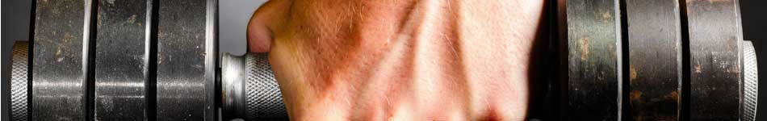
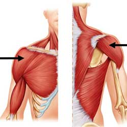
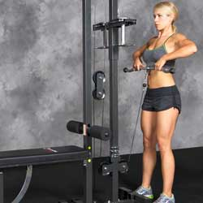
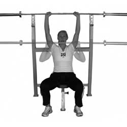
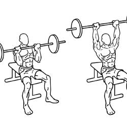
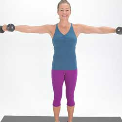

| Home | Workouts | Good Food Diets | |
|  | |||
|
|
ShouldersDeltoids (shoulders)Cable machine upright rowThe upright row is performed while standing, holding a weight hanging down in the hands, by lifting it straight up to the collarbone. This is a compound exercise that also involves the trapezius, upper back, forearms, triceps, and the biceps. The narrower the grip the more the trapezius muscles are exercised. Equipment: dumbbells, barbell, Smith machine or cable machine. The shoulder pressThe Shoulder press is performed while seated, or standing by lowering a weight held above the head to just above the shoulders, and then raising it again. It can be performed with both arms, or one arm at a time. This is a compound exercise that also involves the trapezius and the triceps. Major variants: 360 Degree Shoulder Press (wrists are rotated while weights are lifted, then weights are lowered in front of the head before being rotated back to the first position). The Military pressThe Military Press is similar to the shoulder press but is performed while standing with the feet together. (It is named "military" because of the similarity in appearance to the "at attention" position used in most militaries) Unlike the seated shoulder press, the military press involves the majority of the muscles of the core as stabilizers to keep the body rigid and upright, and is thus a more effective compound exercise. Equipment: dumbbells, kettlebells, barbell, Smith machine or shoulder press machine. Major variants: Arnold Press (dumbbells are raised while rotating the palms outwards). Dumbbell lateral raise The lateral raise (or shoulder fly)The lateral raise is performed while standing or seated, with hands hanging down holding weights, by lifting them out to the sides until just below the level of the shoulders. A slight variation in the lifts can hit the deltoids even harder, while moving upwards, just turn the hands slightly downwards, keeping the last finger higher than the thumb. This is an isolation exercise for the deltoids. Also works the forearms and traps. Equipment: dumbbells, cable machine or lateral raise machine. Major variants: front raise (lift weights out to the front; emphasis is on the front deltoids), bent-over ~ (emphasis is on the rear deltoids), 180 degree lateral raise (weights are held slightly in front of the body and lifted over the head in a circular motion). |